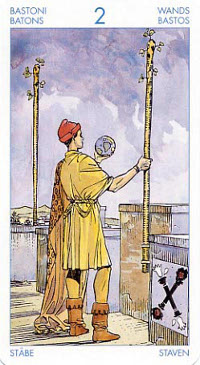

Двойка Жезлов
Значение: В раскладе эта карта часто предлагает человеку за¬думаться, стоит ли браться за выполнение намеченного дела: дело-то получится, да не наступит ли потом разочарование?
При этом задуманное обычно относится к области интеллектуального или творческого труда – написанию диссертации, завершению работы над книгой, пьесой, картиной, планом и т.п.
Ситуации, которым соответствует эта карта, часто напоминают тупики. На объективном плане нет ничего, что мы могли бы считать причиной нашего проигрыша, поражения или дурного настроения, однако вот они налицо, и мы не знаем, что же именно выбило нас из колеи.
На более материальном уровне (социум) двойка посохов символизирует человека с идеями, желаниями, амбициями, который вынужден искать компромисс с другими людьми, наделенными своим идеями, желаниями и амбициями.
В прямом положении карта - символ конструктивного сотрудничества (высокое проявление); на низком проявлении - непонимание, неумение соотнести себя с окружающими, неумение достигнуть согласия.
Таким образом, эта карта в раскладе будет указывать на ситуацию, где вам предложат своего рода испытание на зрелость. Насколько человек способен соотноситься с другими людьми.
Ключевыми словами для карты будут: увязка цели и средств, необходимости и желания, твердость, смелость в предприятии, способность к заниманию должностей. То есть под проблемой этой карты будут иметься в виду - проблемы лидера, который должен согласовать свои амбиции с социальной реальностью, с окружением. Поэтому двойка посохов может подразумевать и человека, умеющего управлять собой, и не позволяющему чувствам взять верх и отвлечь от намеченного. "Правителем управляют все; он не управляет никем".
В таких ситуациях сильно влияние таких планет, как Сатурн и Юпитер, а также знаков, в которых эти планеты выражены, в первую очередь - Стрельца и Козерога.
Появление в раскладе Двойки Посохов свидетельствует, что вы уже попали - или же скоро попадете - в ситуацию выбора.
Определить, каким будет этот выбор, можете по соседним картам в раскладе.
Как правило на карте человек с двумя жезлами(посохами),между которыми он как бы выбирает.
Эта карта противоречия, неожиданных помех, неожиданных событий, которые могут вам помешать. Помехи со стороны людей, которые как вы полагали вам помогут. Ссоры, мелкие конфликты. Потеря денег, разногласия в семейной жизни или с партнерами по бизнесу,коллегами по работе. Посмотрите, какая карта в раскладе будет ближе к посоху, который выбран человеком на карте - это подсказка к основному значению карты.
В перевернутом виде означает, что усилий и времени вопрошающему придется действительно затратить много, а вот результат сомнителен.
Сюрприз, удивление, сильный всплеск чувств. Но все же неприятный.
В перевернутом положении карта может означать беспокойство, зависимость от других, затертость в социальном плане, безынициативность, потерю доверия, униженное положение, внезапные изменения, "сюрпризы" судьбы.